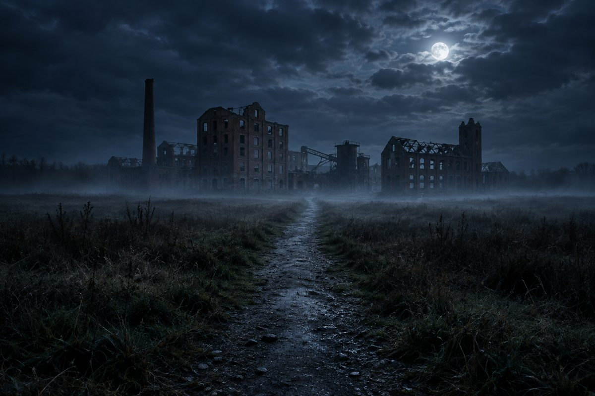

She looks at it a second longer than the question deserves.
"It goes to the old works. Nothing there now." She shrugs. "My brother used to go up when we were small. Then he stopped."
She doesn't say why he stopped.
"Bus is at ten past," she says.
Go and wait for the bus Go explore the path